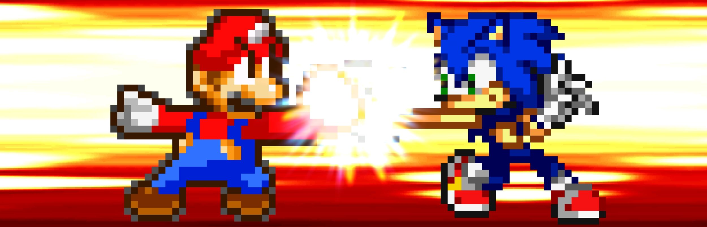
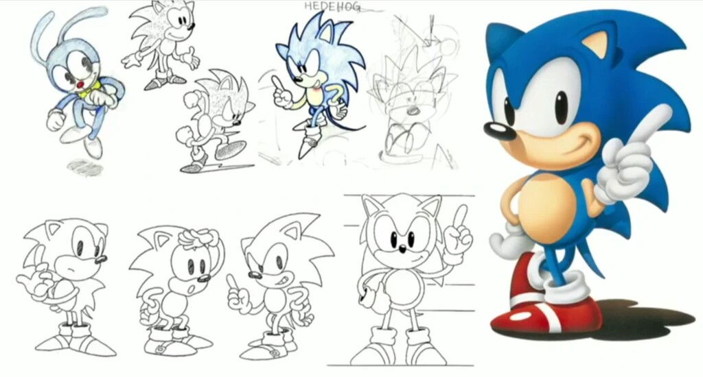
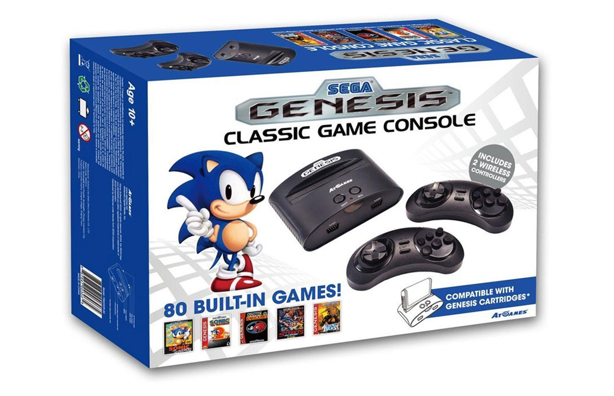
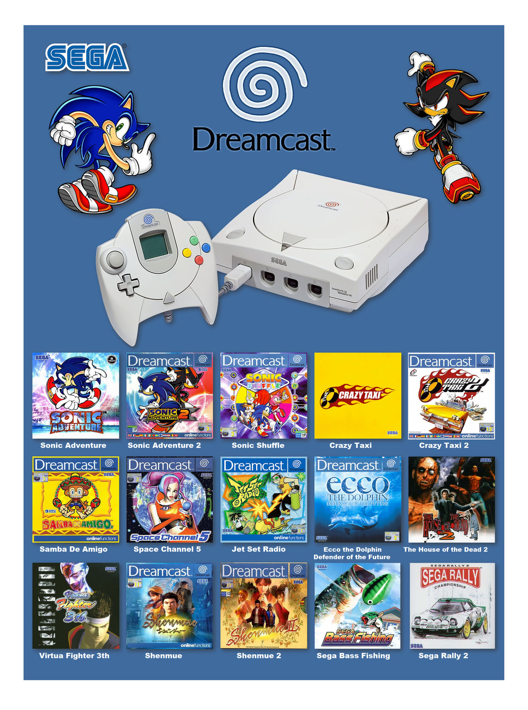

Historia de Sonic
Regresar
Historia de Sonic

La Creación y el Diseño (1990)
El equipo evaluó docenas de conceptos, incluyendo un armadillo (que más tarde se convertiría en Mighty the Armadillo), un perro, un señor en pijama (que inspiró al villano Dr. Eggman) y un conejo cuyas orejas prensiles recogían objetos. Sin embargo, el diseño del conejo presentaba problemas técnicos de renderizado por la complejidad de las animaciones.
La solución llegó de la mano de tres figuras clave:
- Naoto Ohshima (Diseñador de personajes): Creó un erizo antropomórfico inicialmente llamado "Mr. Needlemouse". Le otorgó un color azul cobalto para que coincidiera con el logotipo de Sega.
- Yuji Naka (Programador principal): Había desarrollado un algoritmo que permitía a un sprite moverse suavemente por curvas complejas y bucles (loops) dentro de un tubo. Este motor dictó que el personaje debía rodar para atacar, encajando perfectamente con la naturaleza de un erizo.
- Hirokazu Yasuhara (Diseñador de niveles): Estructuró los mapas para aprovechar el motor de Naka, creando caminos alternativos que recompensaban la habilidad del jugador con rutas más rápidas y fluidas.
El diseño final de Sonic incluyó zapatillas rojas inspiradas en la portada del álbum Bad de Michael Jackson y el contraste de colores de Santa Claus, buscando transmitir una actitud rebelde e irreverente que apelara a los adolescentes. AM8 pasó a rebautizarse oficialmente como Sonic Team.

La Edad de Oro de los 16 bits (1991-1994)
El 23 de junio de 1991, Sonic the Hedgehog debutó para la Sega Genesis/Mega Drive. El juego revolucionó la industria al basar sus mecánicas en la física y el impulso (momentum). Si el jugador dominaba la inercia del personaje, era recompensado con una velocidad sin precedentes. El título catapultó las ventas de la consola, otorgando a Sega el control de más del 50% del mercado estadounidense por primera vez en la historia.
El éxito desató una rápida sucesión de secuelas que expandieron el universo y la tecnología del juego:
- Sonic the Hedgehog 2 (1992): Introdujo a Miles "Tails" Prower como compañero, la habilidad del Spin Dash (cargar velocidad desde un punto fijo) y la transformación en Super Sonic tras recolectar las siete Esmeraldas del Caos.
- Sonic CD (1993): Destacó por su mecánica de viaje en el tiempo (pasado, presente y futuro en el mismo nivel) y presentó a Amy Rose y al rival robótico Metal Sonic.
- Sonic 3 & Knuckles (1994): Concebido como un solo juego masivo, se dividió en dos cartuchos debido a limitaciones de costo y tiempo. El cartucho de Sonic & Knuckles incluía tecnología "Lock-On", permitiendo conectar Sonic 3 (o Sonic 2) en su parte superior para combinar ambos juegos en una experiencia épica, introduciendo a Knuckles the Echidna y múltiples rutas narrativas sin usar una sola línea de diálogo.

La Transición Truncada y el Salto a las 3D (1995-2001)
Durante el ciclo de vida de la Sega Saturn, la mascota sufrió una severa sequía. El ambicioso proyecto Sonic X-treme sufrió un desarrollo tortuoso plagado de problemas de motor gráfico y disputas internas con Yuji Naka, terminando en su cancelación. La Saturn se quedó sin un juego de plataformas principal del erizo, lo que contribuyó a su fracaso comercial.
La redención llegó con la consola Sega Dreamcast y el lanzamiento de Sonic Adventure (1998). Este título marcó el salto definitivo a las 3D. Introdujo un rediseño estilizado de los personajes (por Yuji Uekawa), actuación de voz completa, múltiples campañas entrelazadas y una banda sonora orientada al rock impulsada por la banda Crush 40. Su secuela, Sonic Adventure 2 (2001), perfeccionó la fórmula de velocidad 3D e introdujo a Shadow the Hedgehog, convirtiéndose en uno de los títulos más aclamados de la historia de la franquicia.

La Era Multiplataforma y Experimental (2002-2009)
En 2001, Sega abandonó la fabricación de hardware tras el colapso de la Dreamcast, convirtiéndose en desarrolladora de software para terceros.
Sonic Heroes (2003) fue el primer juego multiplataforma masivo del erizo, introduciendo una mecánica de control simultáneo de equipos de tres personajes. Sin embargo, los años siguientes estuvieron marcados por la inconsistencia:
- Sonic the Hedgehog (2006): Conocido coloquialmente como Sonic 06, pretendía ser un reinicio épico para las consolas HD (Xbox 360/PS3). Las presiones de fechas límite para el 15º aniversario y la división del equipo de desarrollo resultaron en un juego plagado de errores de programación, tiempos de carga excesivos y una historia criticada, marcando el punto más bajo en la reputación de la franquicia.
- Sonic Unleashed (2008): Introdujo el concepto de "Werehog", transformando a Sonic en un erizo con habilidades de combate cuerpo a cuerpo, lo que dividió a los fans.
Renacimiento y la Carta de Amor a los Fans (2010-2017)
Sega refinó la fórmula Boost eliminando los experimentos impopulares. Sonic Colors (2010) y Sonic Generations (2011) combinaron perspectivas 2D y 3D con un diseño de niveles impecable, recuperando el favor de la crítica y celebrando el 20º aniversario con versiones "Clásica" y "Moderna" del erizo cooperando juntas.
Tras el tropiezo del spin-off rediseñado Sonic Boom (2014) y la recepción mixta de Sonic Forces (2017), la verdadera ovación de esta era provino del sector independiente. Sega contrató al programador Christian Whitehead y a un equipo de desarrolladores de fangames para crear Sonic Mania (2017). Este título volvió a la jugabilidad de físicas de 16 bits, combinando niveles reimaginados con zonas completamente nuevas. Fue aclamado como el mejor juego de Sonic en más de dos décadas, demostrando la viabilidad comercial del diseño clásico.

Expansión Cinematográfica y la "Zona Abierta" (2020-Actualidad)
La década de 2020 redefinió el impacto cultural de la franquicia fuera de las consolas. Paramount Pictures lanzó Sonic the Hedgehog (2020), que tras un histórico rediseño del personaje motivado por las quejas del público ante el primer tráiler, se convirtió en un éxito masivo de taquilla, seguido por Sonic the Hedgehog 2 (2022) y expansiones hacia series de televisión como Knuckles y Sonic Prime en Netflix.


En el ámbito de los videojuegos, el Sonic Team reestructuró por completo la fórmula moderna con Sonic Frontiers (2022). El juego introdujo el concepto de "Zona Abierta" (Open Zone), abandonando los niveles lineales tradicionales en favor de vastos biomas explorables llenos de rompecabezas, plataformas flotantes y combates contra titanes mecánicos masivos. El éxito comercial de Frontiers dictó el nuevo rumbo de los títulos tridimensionales, mientras que la línea 2D continuó evolucionando con entregas cooperativas como Sonic Superstars (2023).